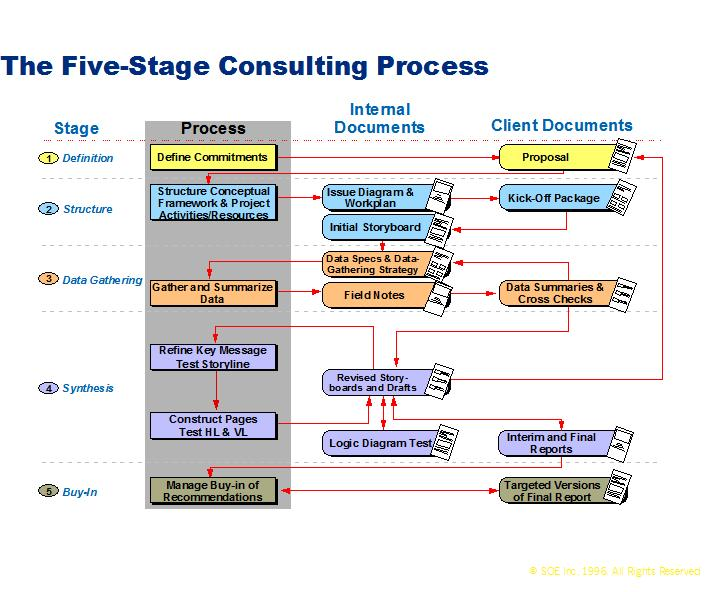

| Guideline: Issue-Based Consulting |
 |
|
| Related Elements |
|---|
1 DescriptionCONSULTING AS A PROBLEM -SOLVING PROCESS - Introduction Client problems presented to consultants demand incisive thought, clear analysis and creativity combined with an economy of effort. The Issue-Based Consulting process, which has been adopted by IBM Consulting and has, proven to be the most effective in addressing client issues. The fundamental process activity is the postulating of the possible elements of the end result that would effectively address the clients problem or ‘issue’ and then carefully plan to investigate and prove/disprove the postulations or ‘hypotheses’. Starting with hypotheses provide:
Our ‘Issue-Based Consulting Process’ combined with the analytical and creative consultant problem solving skills has proven to be very effective in the development of high quality solutions to address client needs. Context of Use The techniques covered in this paper are design for both structuring data gathering and context development of individual work products such as:
See the appropriate work product description for recommended sections, notation, sample templates and specific considerations. 2 ContextISSUE-BASED CONSULTING PROCESS STAGES
Figure 1

3 StepsTHE FIVE STAGE CONSULTING PROCESS Step one: Definition
The commitment to the client and the scope of the engagement is defined through client discussions and a high level
preliminary investigation of identified client issues. Typically the client wants to move from his present ‘As is’
state to a better future ‘To be’ state. The movement to the better ‘To be’ state is bounded by specific client criteria
such as budget constraints, deadlines, business outlook, etc. These preliminary investigations must answer a critical
question at this stage: ‘What does the client want to happen as a result of the engagement?” The results of these
discussions is a proposal which frames the objectives and issues to be investigated in the engagement. The clear
definition of the client objectives and issues will enable a smooth transition from the sale of the engagement to its
delivery. The structuring stage of the process is the most critical of the process. In this stage the investigative thinking for the engagement is set. To begin this step the delivery team should study the proposal and identify the client’s objectives and issues which will be the focus of the engagement. In addition to the proposal the engagement team should also review secondary sources of client objectives and issues such as other consultants who have worked or currently working at client, industry publications, client correspondence, etc. Using this information as input, an issue diagram is created by the engagement team in a workshop conducted by project leader. The issue diagram relates client objectives and issues in a hierarchical manner. The issue diagram serves to bound the scope of the engagement and guide the fact gathering effort as depicted in figure 3.
In addition to issues, the issue diagrams include hypotheses, key questions and data specifications, which are also
developed by engagement team. Hypotheses may define possible opportunities or potential problems. In consulting a
hypotheses is defined as a tentative conclusion about an issue to be resolved or an opportunity to be developed. These
hypotheses are a set of provisional conjectures to shape the investigation (working hypothesis). The engagement
team, in a workshop setting, should generate all possible hypotheses for each issue based on a variety of sources such
as previous experience from similar engagements, the engagement proposal, planning meetings, general experience,
industry publications, etc. The list of hypotheses should then be refined based on relevance, testability and
specificity. For each hypothesis a set of key questions, which when answered proves, modifies or disproves the
hypothesis should be generated. (See figure 6 example) Step three: Data Gathering With hypotheses and key questions defined in the issue diagram you must now consider how to gather the information necessary to address each issue and test each hypothesis. Ideally we want to gather only those facts which are relevant to the issues and hypotheses. The data gathering process is divided into 4 stages:
Figure 4 Define/Refine Data Needs To most efficiently identify the data needs and the sources to test the hypotheses the engagement team should first develop a set of straw man templates to depict detail data necessary to support preliminary hypothesis headlines. Next using the issue diagram and the straw man templates the engagement team should create a data matrix as depicted in figure 4. The data matrix is used to clearly identify data requirements and their sources. Plan Data Gathering Strategy
Once the data matrix is established the team must determine the strategy for gathering the data such as the use of
interviews vs. focus groups or internal sources vs. market data. Figure 5 depicts the data gathering strategy
considerations Figure 5
Data Gather Once the data gathering strategy has been developed data collection can begin after the appropriate preparation has been completed. The preparation includes:
As information is gathered it should be classified as a fact, finding, opinion or observation. Summarize and Cross Check As the engagement team gathers and summarizes data they should cross check the data and revisit the first steps of process by:
As part of the data collection process it is vital that a system for organizing, storing and retrieving data is deployed at the beginning of this process. To assist in the development and data management of issues, hypotheses and questions the SCI Issue Analyzer Tool has been developed. For further information regarding this tool please review SCI Issue Analyzer Tool Guide technique paper. Steps four and five: Synthesis and Buy-inThese steps are covered in Report Creation technique paper. Education
Before using Issue-Based consulting in a client engagement we recommend that you attend either PCW - Professional
Consulting Workshop or XPCW - Experienced Professional Consulting Workshop to obtain a complete education on
issue-based consulting. |
| © Copyright IBM Corp. 1987, 2012 All Rights Reserved Property of IBM These materials are intended only for use as part of an IBM engagement |